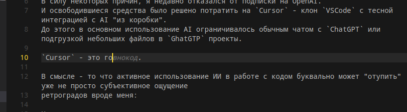

В силу некоторых причин, я недавно отказался от подписки на OpenAI.
И освободившиеся средства было решено потратить на Cursor - клон VSCode с тесной интеграцией с AI “из коробки”.
До этого в основном использование AI ограничивалось обычным чатом с ChatGPT или подгрузкой небольших файлов в GhatGTP проекты.
Чтобы было смешнее, я пишу обзор на Cursor из Cursor‘a, поэтому все косяки, неточности и прочие недочеты в обзоре - это мои собственные недочеты (отличная попытка, автокомплит) - всё происки несчастного ИИ.
Cursor - это гораздо более серьёзный подход по сравнению с простым чатом.
Что меня порадовало:
- Плотная интеграция чата со всем в проекте - файлы с кодом, Docker, git, терминал. Окно контекста можно выбирать самому (к тому же его размер можно регулировать), позволяя машине просматривать как отдельные файлы, так и конкретные строчки в выдаче терминала.
- В целом видимо благодаря контексту, качество предлагаемого кода ощутимо повыше,
чем просто компируя код в чат, или через плагин для
NeoVim(последний как контекст видит только текущий файл). - Любое взаимодествие с модельками осуществляется через пару нажатий - минимальное отвлечение и потеря фокуса.
- Любое предлагаемое изменение преподносится в чем-то вроде
git diff‘а, можно не согласиться или принять изменения выборочно. - Разные виды взаимодествия с ИИ - чат, композитор,
bug finder, опять же не нужно отвекаться и прописывать промпт самому. - Доступ к разным моделькам по подписке, не ограниченный количеством токенов.
Интеграция настолько приятная, что в какой-то момент просто приходит экстаз от нажатия Tab - код пишет сам себя, здорово… Пока, увы, ты не “вписываешься” в “упс, что-то не то”.
Первое столкновение с суровой реальностью приходит не сразу, но неизбежно - получил что-то не то, а что именно теперь нужно вникать - ситуация, в которой оказаться очень легко, во многом как раз из-за того, что всё так удобно и легко подано, что разум непроизвольно отключается.
Тут возникает два взможных выбора:
- Попытаться внимательно вникнуть в сгенерированный код, понять что не так, убрать дублирования, неточности и т.д.
- Попросить виновника найти и исправить ошибки.
Второй вариант мне кажется значит полностью расписаться в том, что “я не понимаю и не хочу понимать что тут происходит” - и как после такого можно доверять своему проекту или своим способностям как инженера?
Галлюцинации, кстати, никуда не делись - хотя и не такие частые, встречал как ИИ:
- Добавил параметр в функцию, которого там отродясь не было, причём одновременно с исправлением в соседнем месте, поэтому мой мозг даже не зафиксировал что это изменение произошло. Упорно видел там этот аргумент даже после того как я убрал его сам.
- Замокал уже существующий мок - ну почему бы и нет?
- Подменил коллекцию с упорядоченными объектами на сет - хотя сортировка была буквально рядом.
 Иногда ИИ говорит сам за себя.
В смысле - то что активное использование ИИ в работе с кодом буквально может “отупить” уже не просто субъективное ощущение:
Microsoft Study Finds AI Makes Human Cognition Atrophied and Unprepared
Некоторые материалы также предполагают, что широкое распространие ИИ в качестве
инструмента разработки приводит одновременно к увеличению скорости
написания кода, но вместе с тем к и снижению его качества.
То что произошло со мной при пользовании Cursor‘ом - очень похоже на это -
ты просто выдаешь код качеством процентов на 20 пониже, зато в 2 раза быстрее.
GitClear AI Assistant Code Quality 2025 Research
Видео по этой же статье:
Выводы - я всё еще решительно не понимаю, как можно уволить кого-то, заменив его на что-то
вроде менеджера с Cursor‘ом или Devin’ом, если процесс разработки всё равно
предполагает бдительное и вдумчивое сопровождение кожанного мешка.
А результаты опросов и исследований показывают нам, что видимо в ближайшем будущем
ожидается больше ужасного кода, который мы теперь можем писать быстрее, чем когда-либо.
Тем не менее, Cursor - это всё еще хороший инструмент, я верю что при
правильном подходе он может сэкономить время и усилия, но всё же нужно обращаться
с ним осторожно. Вероятно TDD как раз будет здесь уместен (с ИИ стараюсь только так и писать, и чтобы он видел тесты в контексте).